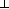

| C |  |
proc T : T' traceable |
| D | ::= | ...as before... |
| | | local rec x; D |
| C | |
proc T : T' traceable |
| C | |
T' traceable |
| C | |
val T : T' traceable |
| C | |
T traceable |
| C x : T; | |
D : (C1 x : T; C2) in val |
| C | |
(local rec x; D) : (C1 C2) in val |
| local rec x; let y:T = x; let x:T = M | = | let y:T = M | (x  fv M) fv M) |
| (local rec x; D) D' | = | local rec x; (D D') | (x fv D') |
| D (local rec x; D') | = | local rec x (D; D') | (x fv D) |
| local rec x; local rec y; D | = | local rec y; local rec x; D |
The recursive structure we have added allows us to find fixed points in val, on objects from proc. This is a familiar story to domain theorists, where it is common to find fixed points on (non-strict) Cpo morphisms on (pointed) Cpo objects.
To give a categorical account of recursive declarations, we borrow Hasegawa's presentation of recursive declarations, adapting Joyal, Street and Verity's traced monoidal structure. However, there is a crucial difference between our presentation and Hasegawa's: we are considering call-by-value semantics (such as the Cpo example above) where Hasegawa is considering call-by-name. The call-by-value category Cpo has smash product as its monoidal structure, so does not support a trace, whereas the call-by-name equivalent has non-strict product, and so does support a trace.
A trace on a symmetric monoidal category is given by a natural transformation:
 Z, Y Z]
Z, Y Z]
 C[X, Y]
C[X, Y]
satisfying certain axioms. For example, Hasegawa shows that the category of pointed cpos with non-strict product has a trace given by fixed points.
As noted above, the category Cpo (of pointed cpos with smash product) does not have a trace, since the obvious fixed-point construction is the trivial one, since the fixed point of any strict map is the constant bottom map, and smash producting bottom with any other map yields bottom. Thus the attempt to duplicate Hasegawa's construction in the call-by-value case yields the constant bottm natural transformation, which fails to satisfy the trace axioms.
We need to generalize the trace construction to include cases such as Cpo, and fortunately there is an obvious such generalization. Given a symmetric monoidal category C with a full subcategory (not necessarily symmetric monoidal) TC
 C
C
a partial trace is a natural transformation:
U A, Y U A]
C[X, Y]
satisfying certain axioms (given in an appendix).
Adding local rec declarations gives the syntactic category val a partial trace (where TC is the full subcategory of traceable types) where the trace of
M : (UV)
in val
is given by a local rec declaration:
local rec z;
let (yz : UV) = M;
(y) : (U)
in val
This trace is partial because of the condition that T has to be traceable.
Previously, all of the graphs we have described have been acyclic. Adding a trace structure to graphs is just allowing cyclic graphs:
Traces were initially proposed as a categorical model of cycles in knots, and this graphical presentation is just a simplified version of the knot diagrams presented by Joyal, Street and Verity. Where they were concerned with knots, we are just concerned with graphs, so we have replaced their braided monoidal setting with a simpler symmetric monoidal one.
For partial traces, we use the same graphical presentation, but with
the restriction that the type of the feedback arc has to be traceable,
that is of the form
X1 
 Xn
Xn  Y.
Y.
For example, with appropriate string and I/O primitives, we can write a simple `hello' program:
Or with an appropriate `if' primitive, we can define a while loop:
For example:
Adding a partial trace allows us to build cyclic graphs, but does it allow us to define recursive functions? The answer is yes, provided there is a natural diagonal and a natural strength in C.
The fixed point of f
(for f :
(X U(A))
U(A) and natural diagonal
copyX : X X X):
This is an indexed fixed point becase:
| = | (Naturality of copy) | |
| = | (Naturality of Tr) | |
| = | (Indexed dinaturality of Tr) |